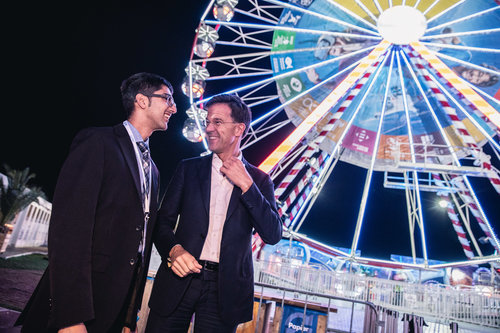
Amil Khanzada
Founder. UC Berkeley Computer Science alumnus, Eiheiji Town Evolution Ambassador, and One Young World Peace Ambassador.
This site preserves ZenIT’s workshops, people, and ideas from 2018–2019. The project explored how Zen practice and collaborative technology work could create calmer, more humane workplaces.
ABOUT
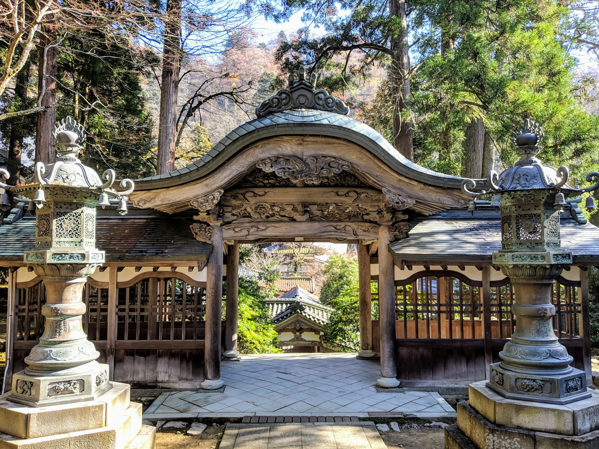
Can you imagine a world where every workplace is a peaceful retreat, where you leave every day feeling better than when you came in?
The goal of the ZenIT project is to bring peace to the workforce by defining a new style of working... one that is very peaceful and highly productive, enabling us to think creatively and apply technology at the greatest levels mankind has seen yet. We have taken on the responsibility to reverse the global trends of high workplace stress and burnout. And our goal by 2040 is for every person in the world to have the option of a peaceful job.
The human rights violations occurring daily in “peaceful” countries often goes ignored. Through my experience working around the world, I have watched many of my good friends suffering in the workforce, where they were made to work 10-20 hours per day and on weekends, developing mental diseases and, in extreme cases, passing away. Even back home in the Silicon Valley, with shorter working hours, high stress, mental illnesses (anxiety, panic attacks, depression, etc.), and food issues (heartburn, etc.) are regarded as normal. Myself included, many of us have worked in torment, despite being surrounded by beautiful things, technology, and ample finances.
We must also be aware that technology also poses a threat. Although it is convenient, human society is not fully aware of the side effects of heavy computer/smartphone use. In my own personal experience, I have found it to damage my mind and internal organs, manifesting as anxiety and severe heartburn. We cannot continue like this. How will the current generation of toddlers being raised on tablet computers grow up? It’s critical that we redefine the way we use technology so that future generations have a proper chance at life.
But how can these problems be solved? Perhaps by defining the ZenIT style of work and spreading it globally. This mission will require an immense amount of collaborative effort, research studies in Psychology and Computer Science, corporate training programs, education for kids, collaboration with governments on labor law changes, recognition by the United Nations as a Sustainable Development Goal, and so forth.
The founder of ZenIT is well-positioned to lead this effort:
Proficiency in the highly productive Silicon Valley software development styles and pair programming, with access to developers and executives at several Silicon Valley firms
Eiheiji Town Evolution Ambassador, with access to the peaceful principles of Zen and meditation, highly developed over 750 years, and the Japanese government
One Young World Ambassador with access to a worldwide network of young leaders, country heads, top executives, and Nobel Laureates committed to bettering the world
14+ years of experience in Martial Arts, Yoga, and mindfulness
About Eiheiji and Zen
Fukui is continuously ranked as one of the happiest prefecture in Japan. Eiheiji is the head temple of Soto Zen, with 15,000 branch temples across the world. Up to 6,000 people per day visit it for sightseeing.
Japanese Zen focuses on learning yourself and reducing suffering through Zazen sitting meditation and many philosophical teachings. It is a highly advanced way of living that yields peaceful human life.
TEAM

Founder. UC Berkeley Computer Science alumnus, Eiheiji Town Evolution Ambassador, and One Young World Peace Ambassador.
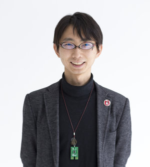
Founder and chair of jig.jp, open-data advocate, and creator of IchigoJam.
Mental health therapist and UC Berkeley alumna focused on holistic healing and mindfulness.
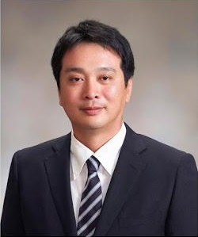
Former Mayor of Eiheiji Town and Zen culture advocate.
EXPERIENCE
Sunday, December 15, 2019
9:00 AM–12:00 PM
Wednesday, October 9, 2019
6:10 PM–7:00 PM
Sunday, April 14, 2019
9:30 AM–4:00 PM
Sunday, January 27, 2019
9:30 AM–4:00 PM
Sunday, December 2, 2018
1:00 PM–4:00 PM
ARCHIVE
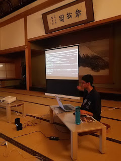
Oct 9, 2018
Today, we did a more advanced ZenIT workshop with some younger, experienced programmers!

Jan 26, 2019
ZenIT founder, Amil, gave a presentation in Japanese to about 20 students of the University of Fukui School of Global and Community Studies! Thanks to the students for helping to prepare the
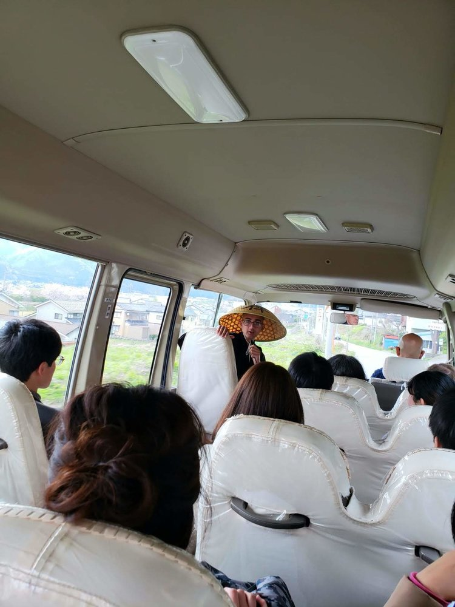
Apr 16, 2019
今回の禅ITのワークショップは、桜の一番綺麗な季節で、道元禅師が大本山永平寺に立ち上げる前に修行された吉峰寺と永平寺町魅力発信交流施設えい坊館で行われました。参加者は福井、京都、そして東京からも来て下さいました！（イベント詳細ページ）
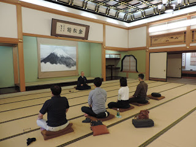
Aug 27, 2018
We ran the first Zen programming workshop at the Eiheiji Four Seasons Cultural Center on 2018/8/26!

Sep 4, 2018
今日は７年間もプログラミングやってる道場仁志（どうじょう・まさし）と２時間ぐらいの禅プログラミングワークショップやりました！福井駅辺りで合流して、風水のいい和食屋さんで晩ごはんを食べて元気になって、車で永平寺町の四季の森文化館に移動して、ワークショップを始まりました。
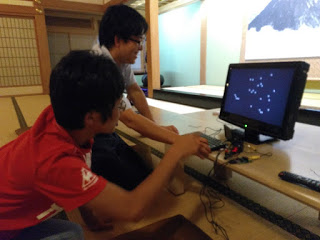
Sep 7, 2018
最初の方は20代男のしものさんとしゅんさんが四季の森文化館に来て、2階の禅部屋でIchigoJamをモニターにつながって簡単なペアプログラミングをやりました。

Dec 23, 2019
今回の禅ITのワークショップは、永平寺町松岡にある曹洞宗の清涼山天龍寺と永平寺町魅力発信交流施設えい坊館で行われました！（イベント詳細ページ）
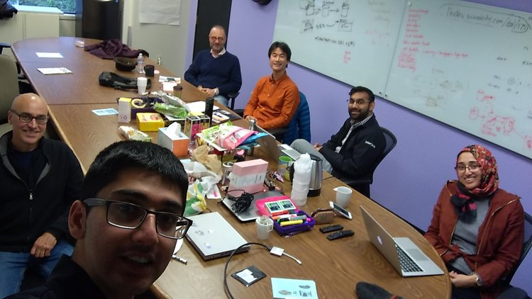
Jan 16, 2019
Here’s to a successful business planning workshop for ZenIT, in the Silicon Valley (original event page). Thanks to all twenty-three participants for their feedback, ideas, and collaboration
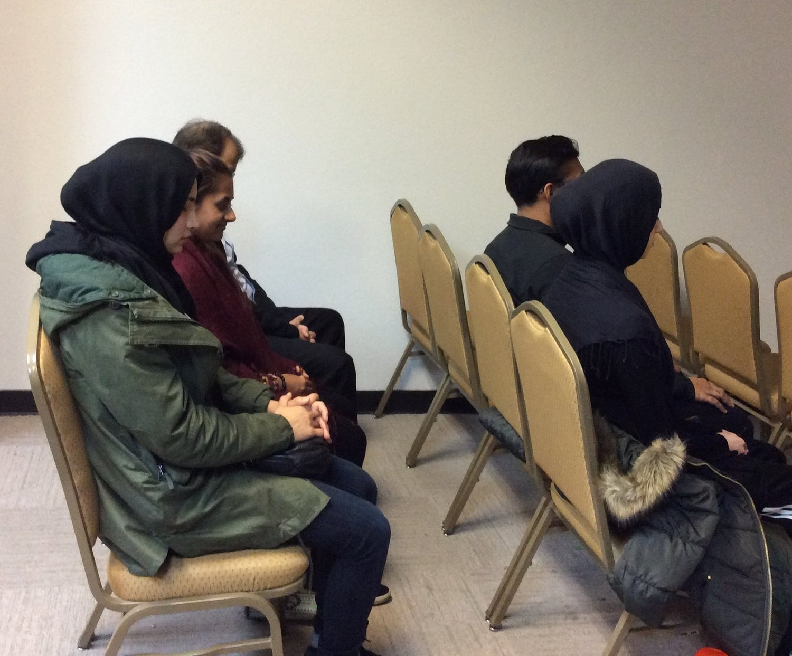
Nov 22, 2018
In this session, Amil Khanzada, UC Berkeley Computer Science alumnus will talk about a new movement to define a style of working that is highly productive *and* peaceful, by combining spirit
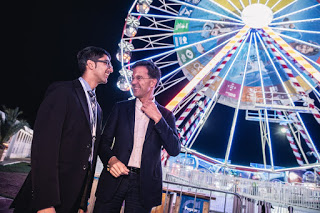

Sep 23, 2018
Eiheiji Town's Evolution Ambassador Amil gave a Zen x Programming workshop, combining Silicon Valley Extreme Programming style and Zen. He did at Eiheiji Town's Four Seasons Forest Cultural

Sep 2, 2018
今日は鍋山真一郎君と禅プログラミング授業をやりました。彼は１５歳だけど、ある程度英語ができて、前も開発の経験があって、かなり複雑な開発できました。

Oct 2, 2018
IchigoSoda (IchigoJam x sakura.io) を途中からZenIT ペアプログラミングスタイルにして、アプリとIoTづくりと学ぶ体験会。
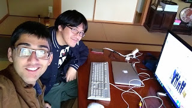
Sep 30, 2018
Today, I paired in ZenIT style with Masashi Dojo, a Japanese programmer living in Katsuyama, Fukui with 10 years of experience in mobile apps and testing.
GALLERY
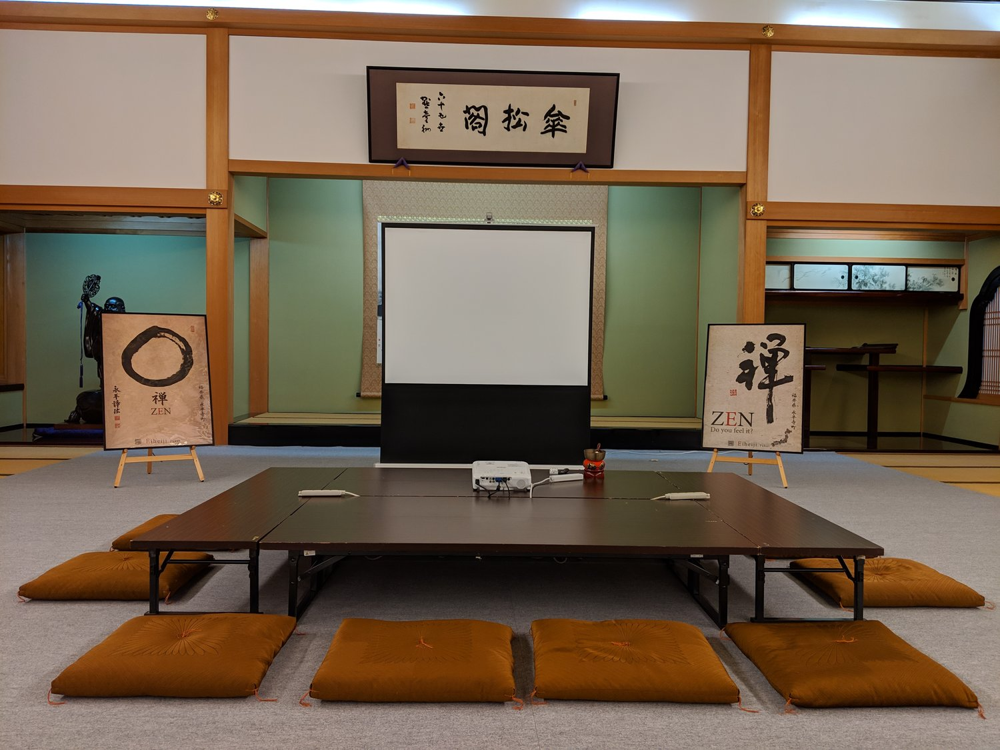

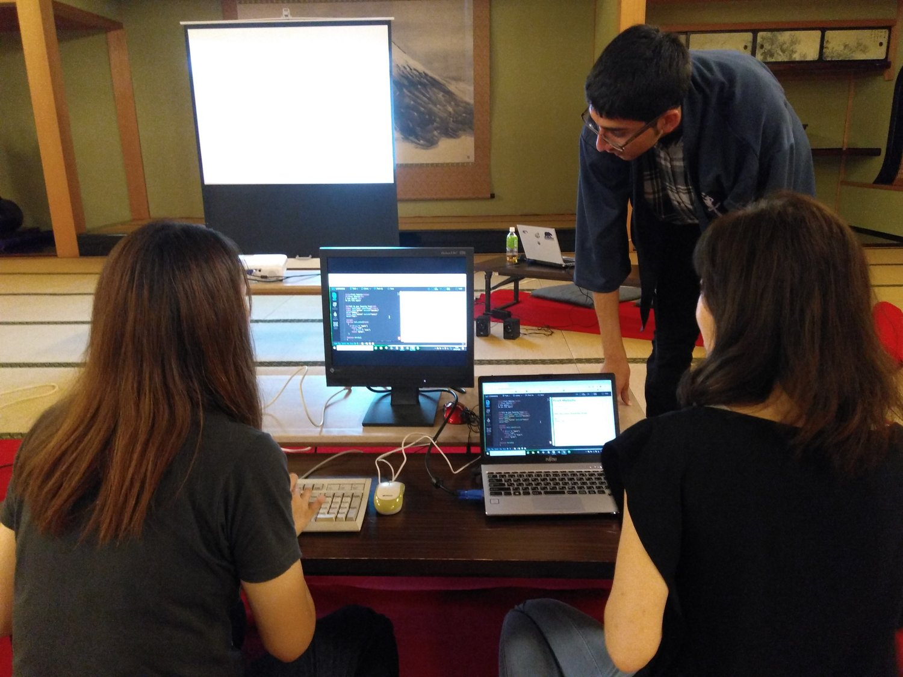
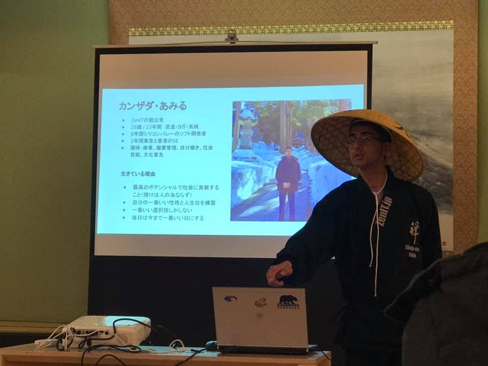
VIDEOS
Watch a workshop from the archive or visit the ZenIT YouTube channel.
View the YouTube channel →CONNECT
For questions about the project, write to info@zenit.jp.